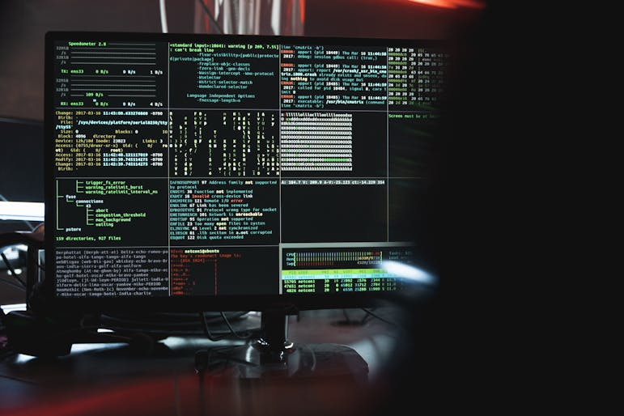
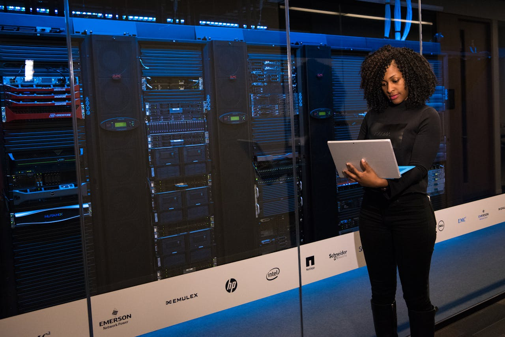

01
Administration Système & Réseau
Concevoir, déployer et maintenir des infrastructures...
Étudiant en BTS SIO
Passionné par l'architecture système/réseaux et les enjeux critiques de la cybersécurité, j'évolue dans l'univers de l'informatique. Mon savoir-faire s'articule autour de la conception d'infrastructures sous Windows et Linux ainsi que sur la mise en œuvre de stratégies de protection des données. Fort de mes expériences en stage et de la réalisation de projets techniques concrets, j'ai pu confronter mes connaissances théoriques aux réalités du terrain. Ce portfolio témoigne de mon parcours, de ma veille technologique constante et de ma volonté d'accompagner la transformation numérique avec rigueur et méthodologie.
Passionné par l'architecture technique et les enjeux de la cybersécurité, ce portfolio est le reflet de mes compétences acquises et de mon évolution professionnelle. Mon parcours s'articule autour de trois piliers fondamentaux :
Concevoir, déployer et maintenir des infrastructures...
Assurer l'intégrité, la confidentialité et la disponibilité des données...

Répondre aux besoins des utilisateurs et documenter mes interventions...

Contactez-moi pour obtenir davantage de détails techniques ou les livrables complets.